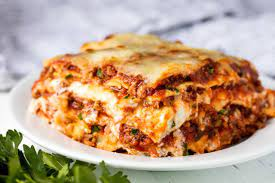

Lasagna

Description
This is a lasagna dishes!
Ingredients
- Pasta
- Meats
- Tomato Sauce
- Vegetables
- Cheese
- Spices
Steps
- Mix the ricotta and cheeses (per recipe below) with an egg in a bowl, and set aside.
- Brown the onion, garlic, and meat in a pot on the stovetop.
- Add the pasta sauce and tomato paste & simmer a few minutes.
- Layer the meat sauce and cheese mixture with noodles and bake until bubbling.